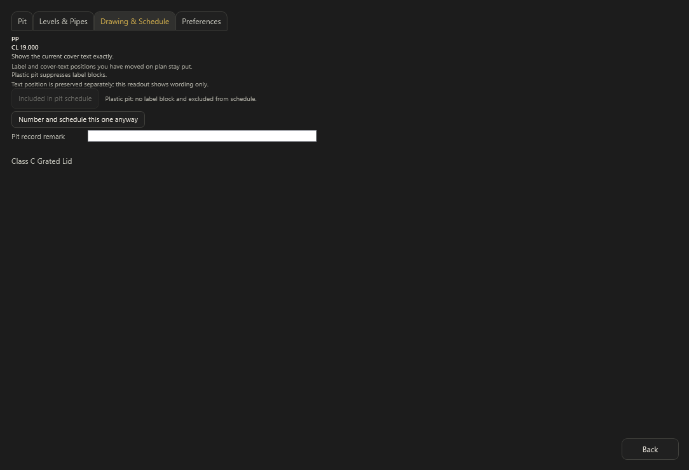
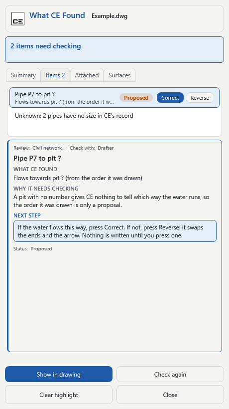
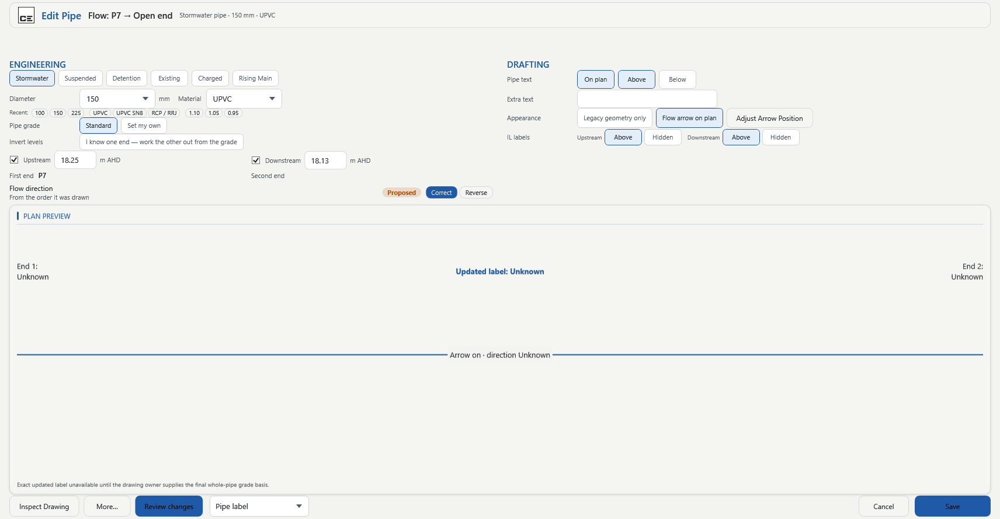
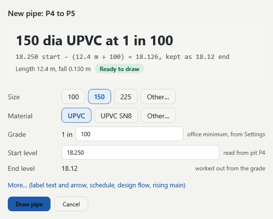

What was built, beside the picture Tim OK'd
Sun 15 Nov 2026, trust-safety-fixes lane. The renders are the real built windows drawn off-screen from the code (synthetic values, not AutoCAD). Nothing here is installed; batch 9 waits for the controller.
1. Pit Schedule: quiet grey count (draft 2039)
Picture OK'd 10:21 ("OK as shown", "OK as written").
Differences: none in look or words. "3 plastic pits not listed (no number)"; one pit reads "1 plastic pit not listed (no number)".
2. Edit Pit: "Number and schedule this one anyway" behind More... (draft 2039, Tim's choice B)
Picture (B, More... opened)
Included in pit scheduleNo
Pit numbernone
Number and schedule this one anyway
Built (More..., Drawing & Schedule tab)

Differences:
- Schedule tick: shown as the greyed "Included in pit schedule" toggle with "Plastic pit: no label block and excluded from schedule." instead of the word "No".
- Pit number: no "Pit number: none" row on this tab; the number lives on the main page (render beside it: EDITPIT_NUMBER_AND_SCHEDULE_15NOV_render_built_mainpage.png).
3. Proposed flow direction, A: in the Check this drawing list (draft 2049, Q11)
Picture (A)
Pipe P6 to P7150 dia UPVCSure
Pipe P7 to pit ?
Flows towards pit ? (from the order it was drawn)ProposedCorrect Reverse
Built (What CE Found, Items tab)

Differences:
- No "Sure" rows: the list holds only items that need checking, so pipes already sure are not listed.
- Long second line: it is cut with "..." in the row at the palette's smallest width; the full words are in the panel below the list.
- Colour: the amber is the theme's warning colour, a tint behind the word "Proposed" (dark theme: render).
4. Proposed flow direction, B: in Edit Pipe (draft 2049, Q11)
Picture (B)
Flow direction
From the order it was drawnProposedCorrect Reverse
Built (one-page Edit Pipe)

Differences:
- No small sketch: the picture's pipe sketch is not added; the window's plan preview already shows the pipe and arrow.
- After a press: the grey line changes to what Save will do ("Reverse: turned round and marked Sure when you press Save.").
- Window title: it names the far end as the window does today. For a pit with no number that may be CE's code for the block, not "pit ?" (not changed: a separate screen change).
- Dark theme: render.
5. New Pipe window on one page (new draft for this one screen, switch off by default)
Picture OK'd "OK as shown"; Tim said "build New Pipe" (controller, 15 Nov). Render values are the picture's: 150 UPVC, office minimum 1 in 100, start 18.250 typed, 12.4 m.
Picture (after)
New pipe: P4 to P5
150 dia UPVC at 1 in 100
18.250 start − (12.4 m ÷ 100) = 18.126 end
Length 12.4 m, fall 0.124 m Ready to draw
Size100 150 225 Other…
MaterialUPVC RCP Other…
Grade1 in 100 · office minimum, from Settings
Start level18.250 · read from pit P4
End level18.126 · worked out from the grade
More… (label text and arrow, schedule, design flow, rising main)
Draw pipe Cancel
Built (light)

Differences:
- End level 18.12, not 18.126: CE rounds a worked-out fall up to the next whole 10 mm (an existing CE rule, not new), so 12.4 m at 1 in 100 falls 0.130 m and CD writes 18.12. The page shows what CD will really write, and the sum says so: "= 18.126, kept as 18.12 end".
- More… opens today's full New Pipe window on the same answers (all its sections), not a fold-down list on the page. Cancel there comes back to this page.
- The sum is one line, as pictured. Tim's card rule (figures in a column, a line above the result, a double line under it) is not used here: the picture wins. For Tim to choose.
- Dark theme accent is gold (the chosen size and material, Draw pipe, More…): CE's dark theme uses gold, the picture used blue. Light theme is CE blue. Not changed: it is the theme for every CE window (dark render).
- Material buttons come from the office list: the render shows UPVC and "UPVC SN8" (the list on this build), not RCP. Sizes and materials always come from this pipe, the last pipes and the office list.
- Grade box: "1 in" sits in front of the box, not inside it. When CE works the grade out from two typed levels (or a Detention pipe), no grade is shown and the note says "worked out from your two levels".
- Before the route is picked (draw-first off): the title is just "New pipe" and the length reads "worked out when you pick the route".
- A simple pipe (no text, levels or schedule) keeps today's window.